Configure plugins to work with the theme¶
NOTE: Please read the Quick Start section for how to install and activate plugins.
WPDanceClaraTheme Toolkit¶
Plugin enables shortcodes:
wpdanceclaratheme_site_header: This shortcode will display site logo, title and tagline. It is used in Header / Footer editor.wpdanceclaratheme_user_links: This shortcode displays user link Login, Register or Logout depends on user logged in or not.wpdanceclaratheme_dropdowncart: This shortcode will display woocommerce dropdown cart.wpdanceclaratheme_nav_menu: This shortcode will display your chosen navigation menu.wpdanceclaratheme_owlcarousel: This shortcode will display carousel slider for WooCommerce products.wpdanceclaratheme_countdown: This shortcode will display time countdown using jQuery countdown.wpdanceclaratheme_tagtray: This shortcode will display Instagram photo using web services from TagTray.ubermenu: This shortcode will display mega menu if plugin UberMenu is activated, otherwise it will fallback to display WordPress standard menu.
These shortcodes are also supported for Visual Composer elements:
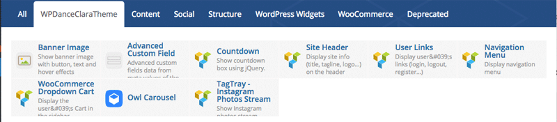
There is no configuration needed for this plugin.
Advanced Excerpt¶
Although the theme should work without any problem after activate the plugin with default configuration, we still recommend to disable excerpt filter for the_content.
From admin page, go to Settings > Excerpt, we recommend leave all options as default, except option Filter should untick the_content():
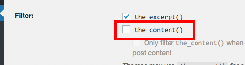
Better Font Awesome¶
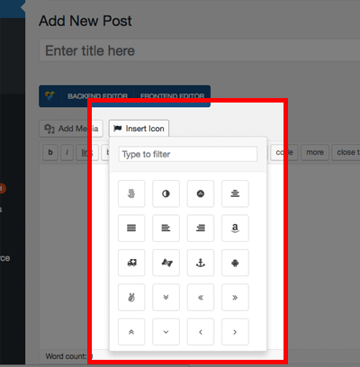
The theme should work with default configuration after activate the plugin. No extra configuration need.
Breadcrumb NavXT¶
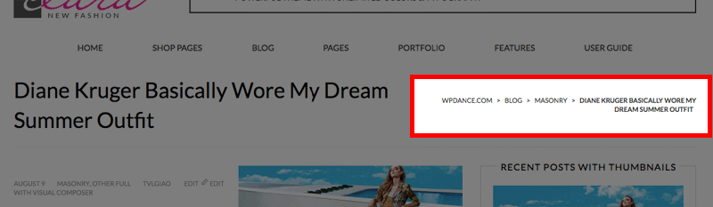
The theme should work with default configuration after activate the plugin. No extra configuration need.
CM Registration¶
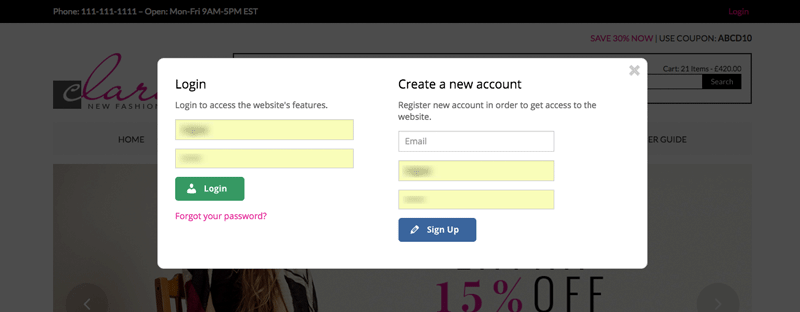
The theme should work with default configuration after activate the plugin. No extra configuration need.
CMB2¶
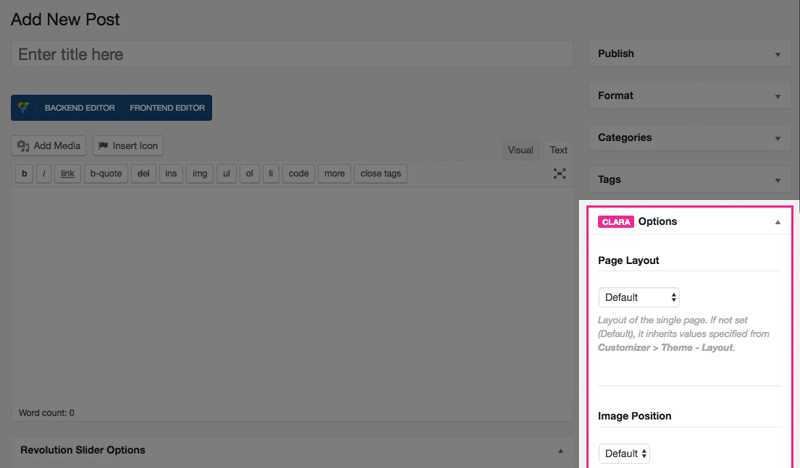
There is no configuration needed.
CMB2 Taxonomy¶
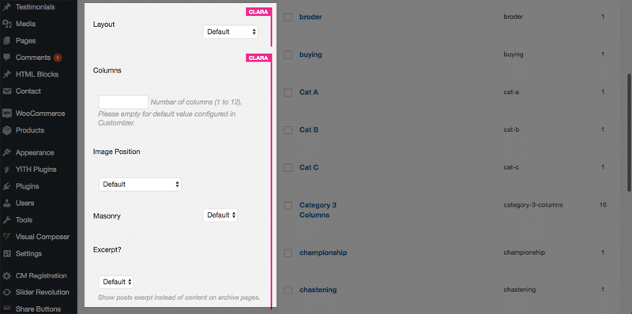
There is no configuration needed.
Comments Widget Plus¶
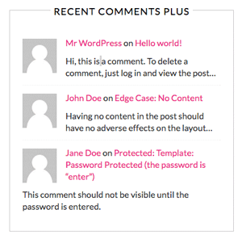
To show comments like your demo site, go to admin page, Appearance > Widgets, drag Recent Comments Plus widget to Main Sidebar.
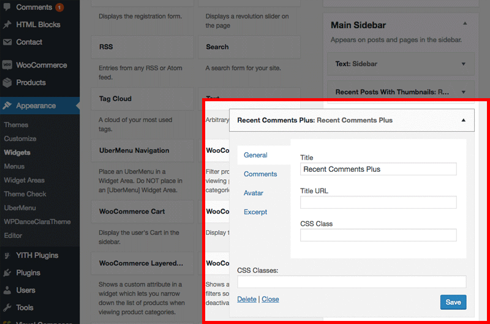
Configure like picture below:
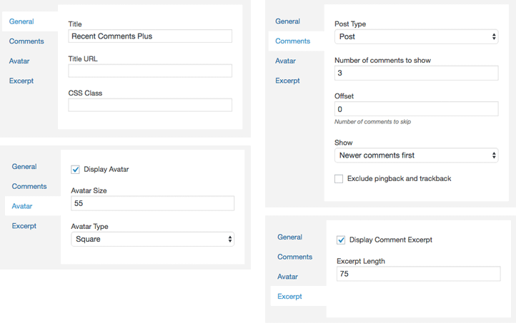
Contact Form 7¶
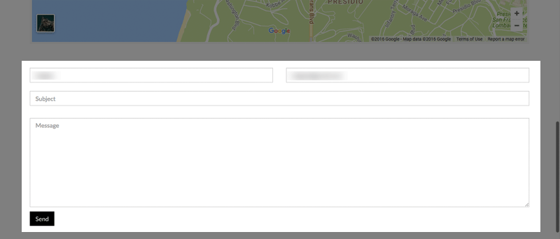
To show contact form like our demo, go to admin page, click Contact > Add New.
Copy content of file sample-data/contact-form.txt into the Form field:
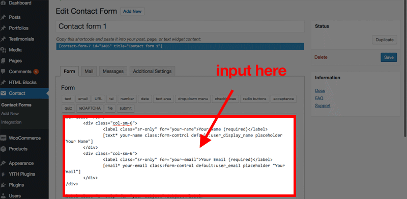
Configure your email in tab Mail:
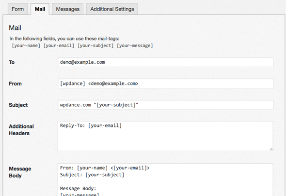
Configure messages if you want or leave it as default:
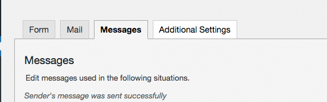
Click Save button to create the form. Now you can insert this shortcode to show up the contact form on any page or post you want:
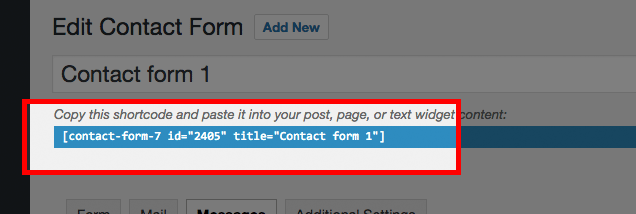
Edit page About Us you will see how the shortcode was inserted:
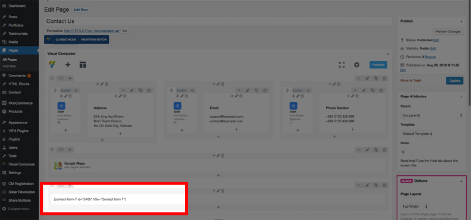
jQuery Colorbox¶
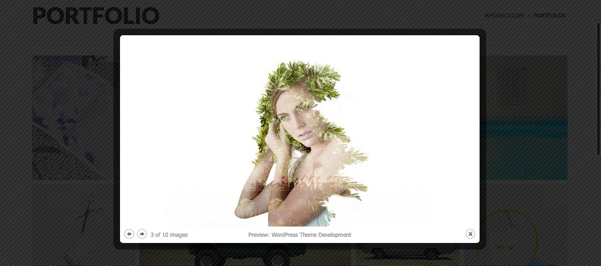
After installed and activated the plugin, go to Settings > jQuery Colorbox, tick Disable warning checkbox, other options should leave as default:
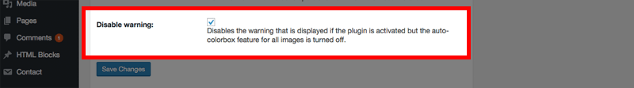
Recent Posts Widget With Thumbnails¶
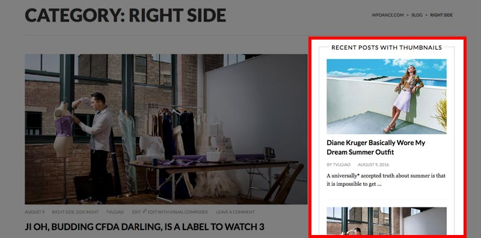
To show the widget like our demo site, go to admin page > Appearance > Widgets, drag Recent Posts With Thumbnails widget into the Main Sidebar:
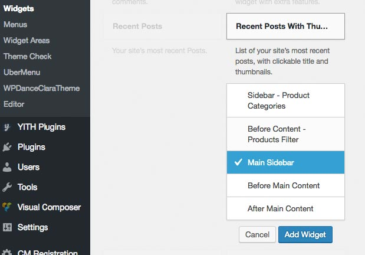
Configure the widget's parameters like below picture:
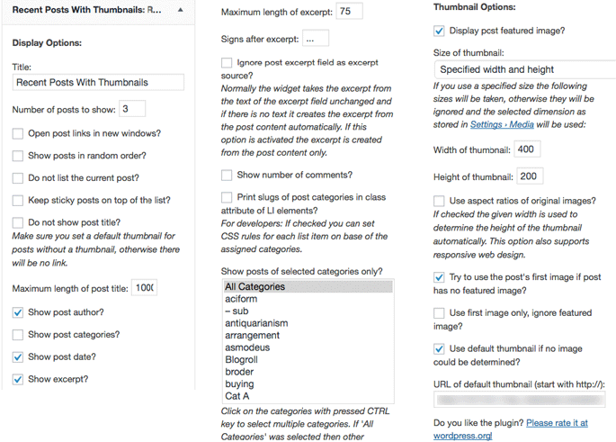
Slider Revolution¶
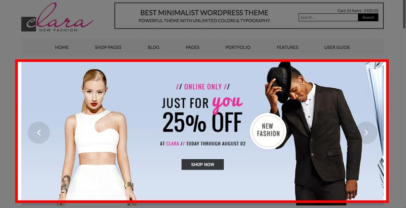
Theme included sample slideshows in zip file, just only import to zip file to quickly create the slideshows like our demo site.
- For importing slideshow instruction, please read Import Sample Sliders in Quick Start guide.
- For detailed how to make slideshow manually, please read the complete guide here: Slider Revolution WordPress 5.x Documentation
UberMenu 3¶
- IMPORTANT NOTE: Theme does NOT include the plugin itself. If you want to have a beautiful mega menu like our demo site, you MUST purchase the plugin at codecanyon.net its price is $19 licensing for a single website.
Theme automatically adds two configurations for UberMenu once the theme is activated:
wpdanceclaratheme-vertical-menuwpdanceclaratheme-horizontal-menu
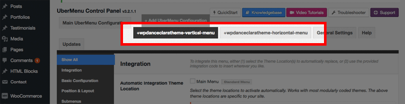
Create UberMenu configuration manually¶
You can add the configuration manually by go to admin page > Appearance > UberMenu, click + Add UberMenu Configuration button:
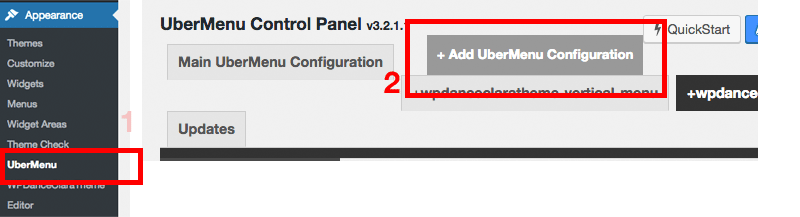
Enter the configuration name, whatever name you want:
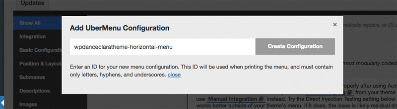
After the configuration created, click Import/Export tab > click Import Settings and copy content of file sample-data/wpdanceclaratheme-horizontal-menu.txt into input box, then click button Confirm and Import Settings Now.
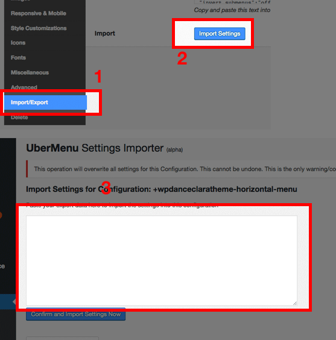
For vertical mega menu, use file sample-data/wpdanceclaratheme-vertical-menu.txt.
Show up mega menu on header¶
In UberMenu Control Panel and your configuration tab, click Integration tab. Scroll down to section Manual Integration, Select your menu in drop down box Integrate Specific Menu copy the shortcode syntax inside SHORTCODE box:
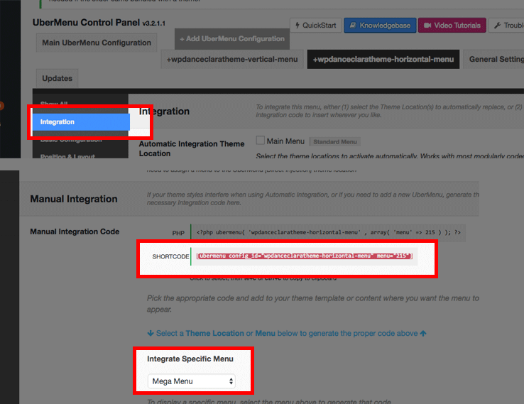
Edit any header in admin page > HTML Blocks > edit a header you will see the shortcode inserted in this post:
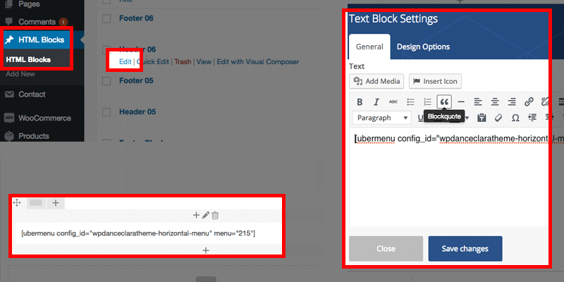
Example:
[ubermenu config_id="wpdanceclaratheme-horizontal-menu" menu="215"]
UberMenu detailed user guide¶
For detailed user guide, please read from the offical website: UberMenu Documentation
Widget CSS Classes¶
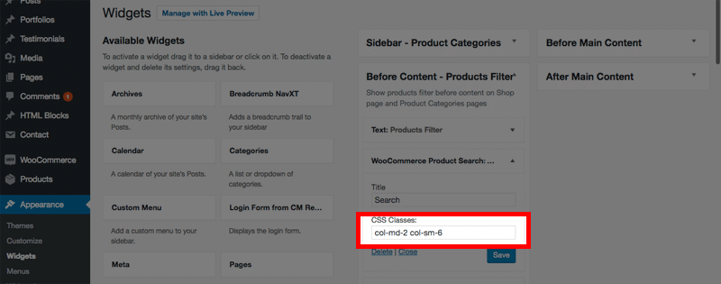
There is no configuration needed.
WooCommerce¶
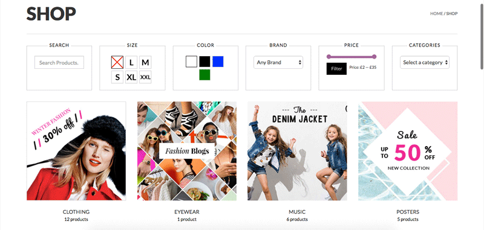
For detailed user guide please read WooCommerce Documentation.
There is no configuration needed.
WooCommerce Dropdown Cart¶
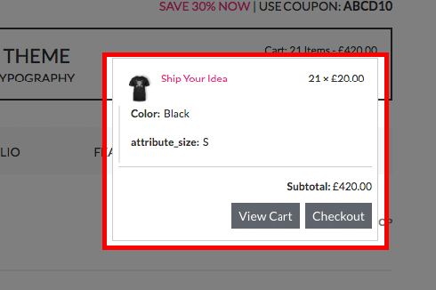
Visual Composer ShortCode for displaying dropdown cart:
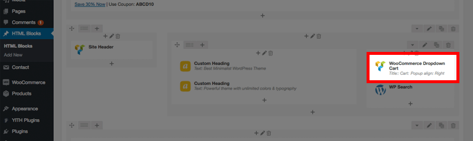
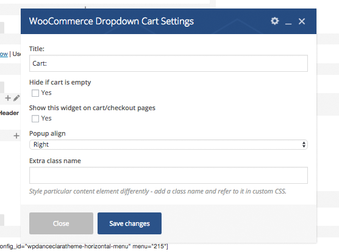
There is no configuration needed.
WooCommerce Social Media Share Buttons¶
Social icons show on product detail page:
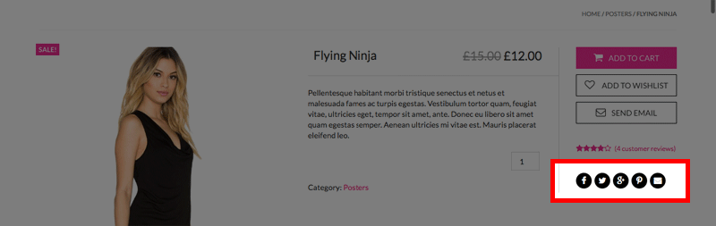
Social icons show on portfolio detail page:

Configure WooCommerce Social Media Sharing Buttons¶
After installed and activated the plugin, go to admin page > click Sharing Buttons on the left column:
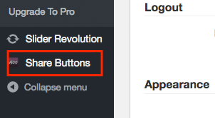
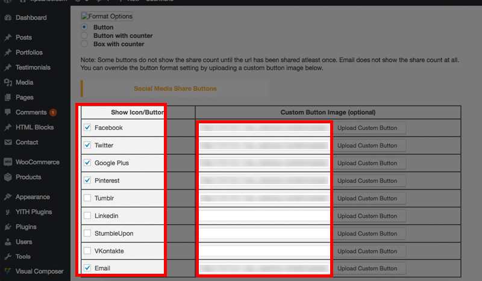
Tick any icons you want to show up. In text boxes Custom Button Image enter URL of the blank image:
//[YOUR-SITE-URL]/wp-content/themes/wpdanceclaratheme/images/blank.png
For example, if your site URL is http://www.example.com/ enter:
//www.example.com/wp-content/themes/wpdanceclaratheme/images/blank.png
Note: don't enter the protocol http: for SSL secured website compatibility.
Click Save Settings to finish.
WooSidebars¶
Showing different sidebar on Shop page:
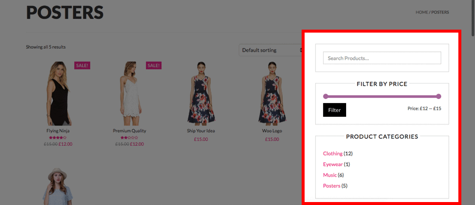
For more usage instruction, please the tutorials in How-To section:
There is no additional configuration needed for this plugin.
WPBakery Visual Composer¶
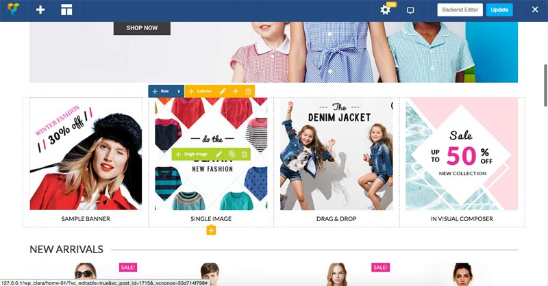
When theme is activated, it automatically adds more Visual Composer's Grid Items for displaying custom styles blog and testimonials:
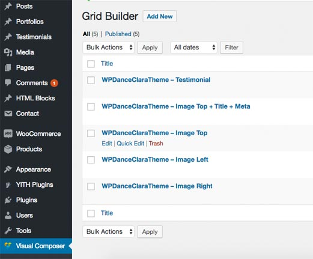
- If you accidentially delete and for want to restore it, just deactivate and reactivate the theme, the grid items will be automatically added again.
Theme automatically enable Visual Composer editor for Headers, Footers and Portfolio. No additional configuration needed for this plugin.
Detailed user guide can be found at the offical website: Visual Composer User Guide
WPDance HTMLBlock¶
Theme automatically add custom Headers & Footers to this plugin when the theme is activated. No additional configuration needed.
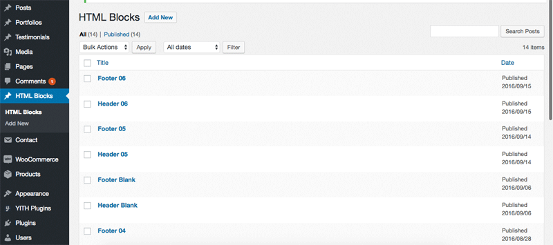
- If you accidentially delete or want to restore the original version, just delete it, then deactivate and reactivate the theme again, it will be restored automatically.
For more detail how to use this plugin for managing Headers & Footers, please read instruction in Headers & Footers section.
WPDance Portfolio¶
After installed and activated, a new menu Portfolios will appear on the admin menu:
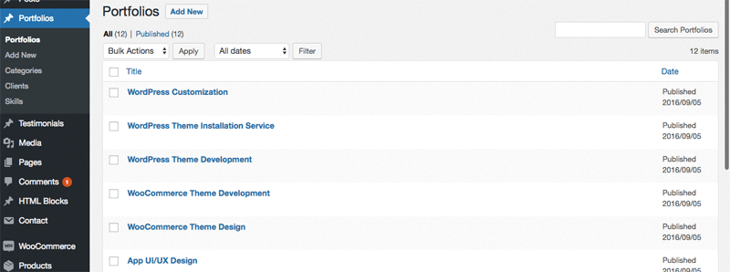
You can use WordPress Importer plugin to import sample portfolio items like our demo site. Please read instruction how to import sample data in Quick Start section.
WPDance Testimonial¶
After installed and activated, a new menu Testimonials will appear on the admin menu:
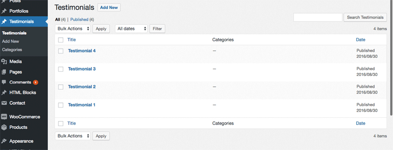
You can use WordPress Importer plugin to import sample testimonial items like our demo site. Please read instruction how to import sample data in Quick Start section.
For showing testimonials on pages, please read instruction How to show testimonials on a page in How-To section.
YITH WooCommerce Quick View¶
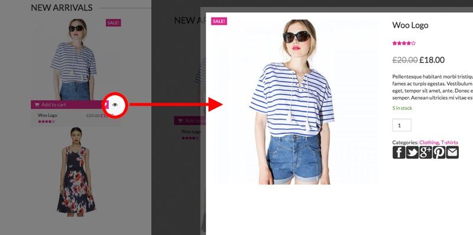
After installed and activated the plugin, leave all plugin settings as default. There is no need additional configuration for this plugin.
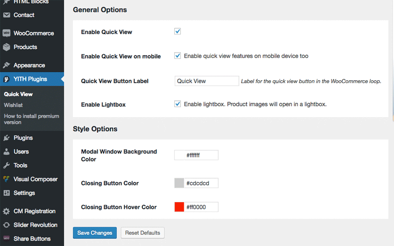
YITH WooCommerce Wishlist¶
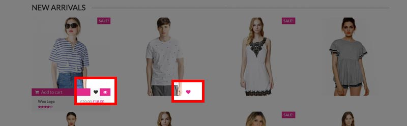
After installed and activated the plugin, leave all plugin settings as default. There is no need additional configuration for this plugin.
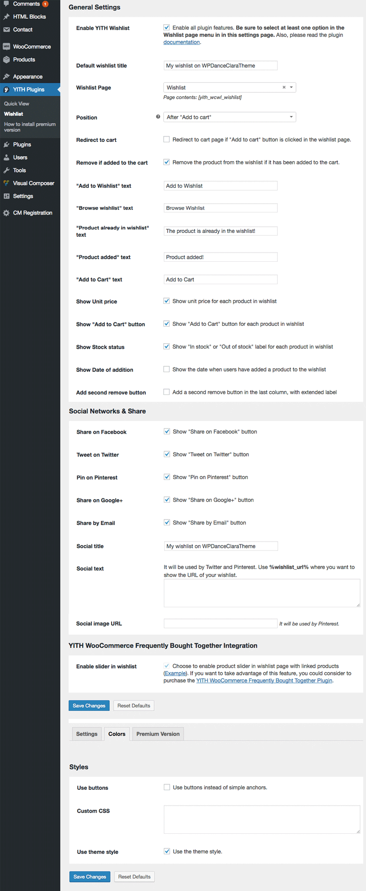